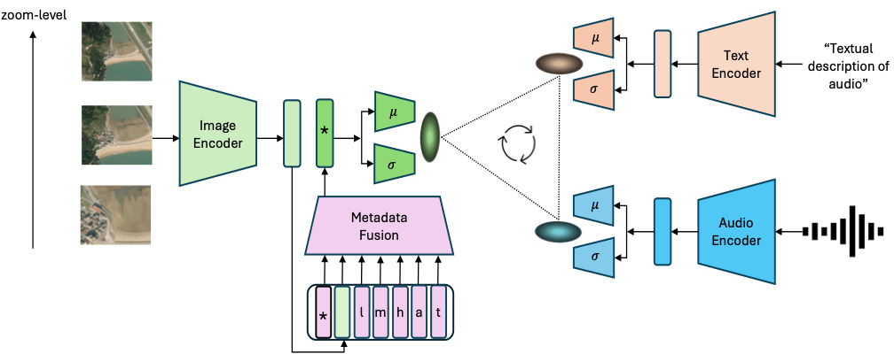

Method

Our proposed framework, Probabilistic Soundscape Mapping (PSM), combines image, audio, and text encoders to learn a probabilistic joint representation space. Metadata, including geolocation (l), month (m), hour (h), audio-source (a), and caption-source (t), is encoded separately and fused with image embeddings using a transformer-based metadata fusion module. For each encoder, 𝜇 and 𝜎 heads yield probabilistic embeddings, which are used to compute probabilistic contrastive loss.
Soundscape Maps


Satellite Image to Sound Retrieval
BibTeX
@inproceedings{khanal2024psm,
title = {PSM: Learning Probabilistic Embeddings for Multi-scale Zero-Shot Soundscape Mapping},
author = {Khanal, Subash and Xing, Eric and Sastry, Srikumar and Dhakal, Aayush and Xiong, Zhexiao and Ahmad, Adeel and Jacobs, Nathan},
year = {2024},
month = nov,
booktitle = {Association for Computing Machinery Multimedia (ACM Multimedia)},
}